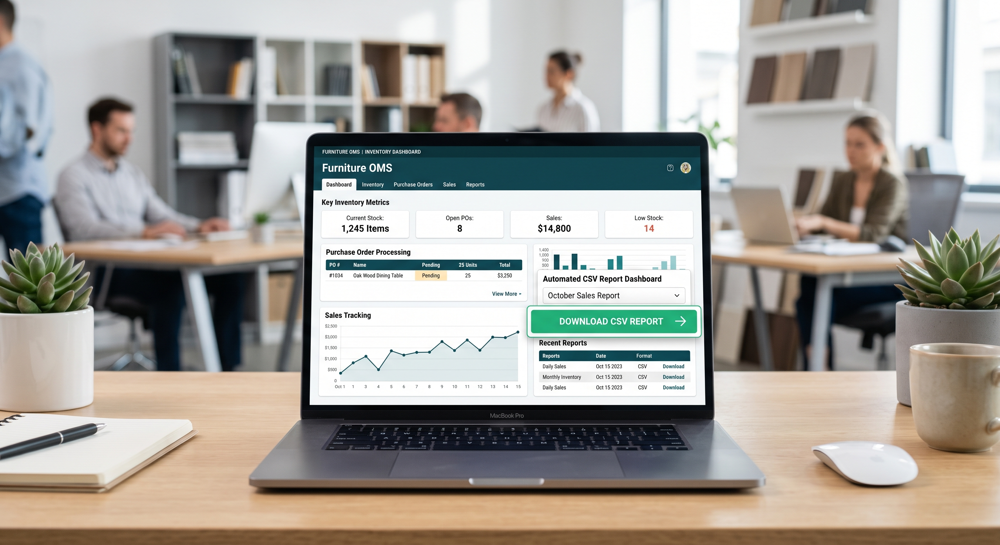
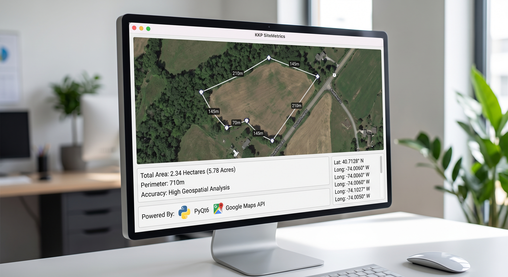
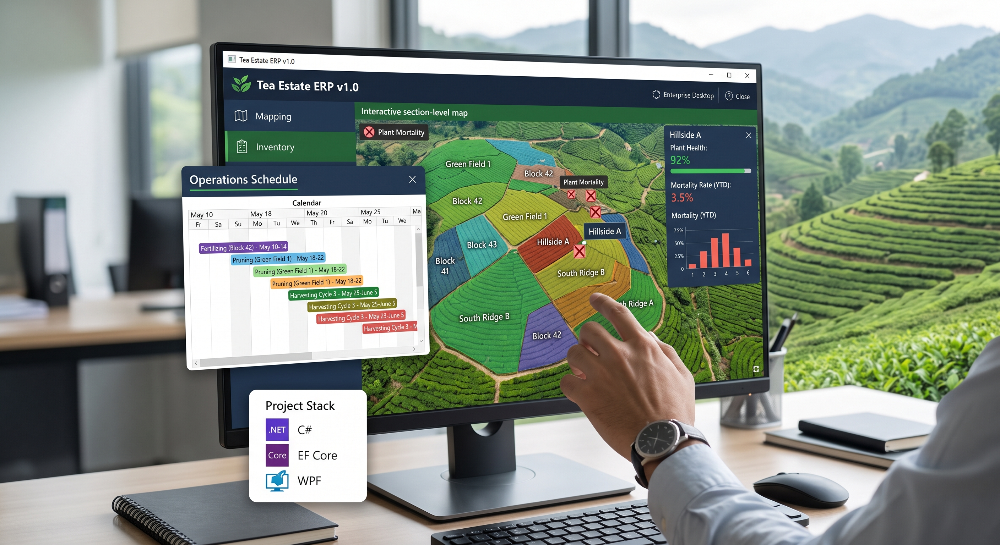
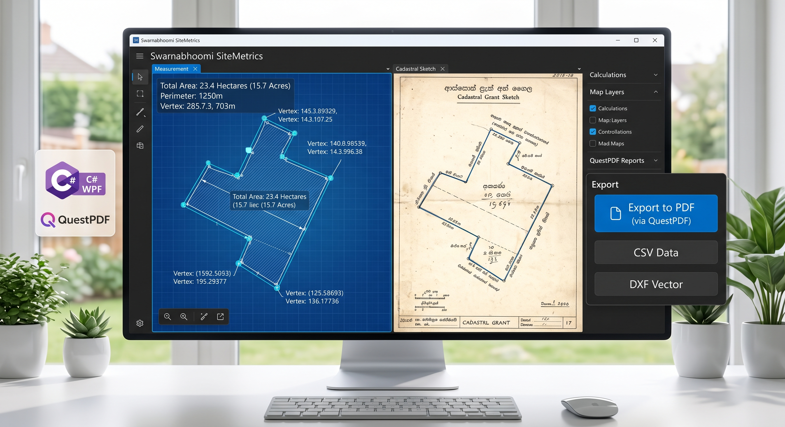

MY PROJECTS
Turning Ideas into
Real Solutions.
A collection of standalone applications, local business utilities, and intelligent systems where I build, learn, and solve real-world problems.
Furniture OMS
A complete inventory management system featuring purchase order processing, sales tracking, and an automated CSV report dashboard.

KKP SiteMetrics
A standalone desktop land measurement application utilizing satellite mapping and coordinate polygon calculations for accurate geospatial analysis.

Digital Twin Chatbot
A bilingual Sri Lankan customer service chatbot integrating intelligent conversational handling and automated holiday calendar checks.
Tea Estate ERP
An enterprise desktop system for plantations featuring section-level mapping, plant mortality tracking, and activity cycle scheduling.

Swarnabhoomi SiteMetrics
A WPF application to calculate land areas from historical cadastral grant sketches with Blueprint vector rendering and export capabilities.
